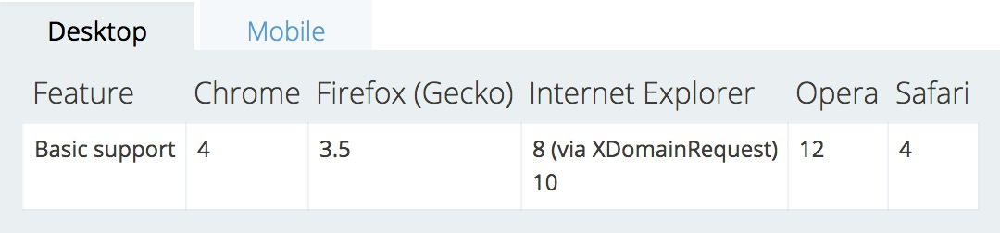
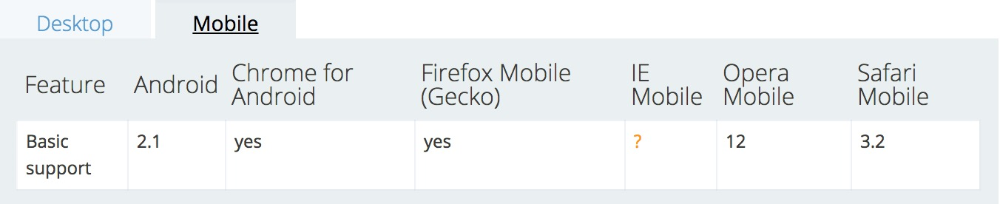

Catagory
Foreword
由于同源策略限制从一个源加载的文档或脚本与来自另一个源的资源进行交互。在web开发中跨域是难免的问题，或是开发时的跨域，或是线上资源请求的跨域。我们可以使用「CORS」允许跨院访问。
先简单说下跨域，当一个资源请求一个其它域名或者另外一个端口的资源时会产生一个跨域HTTP请求(cross-origin HTTP request)。为了访问资源的可靠信，会有同源策略的限制，浏览器会拦截跨域请求的返回结果，有些浏览器会更加严格，不允许从HTTPS的域跨域访问HTTP，如Chrome和Firefox，这些浏览器在请求还未发出的时候就会拦截请求。
CORS Principle

资源请求的响应
CORS（Cross-origin resource sharing,跨域资源共享）是W3C的一个工作草案，定义了在必须访问跨域资源时，浏览器与服务器应该如何沟通。CORS背后的基本思想，就是使用自定义的HTTP请求头部，让浏览器和服务器进行沟通，从而决定请求或响应是应该成功，还是失败。
这个规范是对针对API容器的，比如 XMLHttpRequest 或者 Fetch
比如一个简单的GET或者POST请求，它没有自定义的头部，而主题内容是text/plain。在发送请求时，需要给它附加一个额外的Oringin头部，其中包含请求页面的源信息（协议，域名和端口），以便服务器根据这个头部消息来决定是否给予响应。下面是Oringin头部的一个示例：
Origin: http://www.alenqi.com
如果服务器认为这个请求可以接受，就在Access-Control-Allow-Origin头部中返回相同的源信息。示例：
Access-Control-Allow-Origin: Origin: http://www.alenqi.com
如果没有这个头部，或者有这个头部但是源信息不匹配，浏览器就会驳回请求。正常情况下，浏览器会处理请求。注意，这里的请求和响应都不包含cookie信息。
CORS需要浏览器和服务器同时支持。目前，所有浏览器都支持该功能，IE浏览器不能低于IE10。
浏览器会自动判断如果跨域，自动会添加一些附加的头部信息，还有可能发送预请求。所以，如果服务端实现了响应CORS的接口，就可以跨域访问。
三个访问控制场景
简单请求
- 一些请求不会触发 CORS preflight，而这部分在本文中被称为“简单请求”。满足下述条件的就是“简单请求”：
- 只允许下列方法：
- GET
- POST
- HEAD
- 除了用户代理自动设置的头部外，唯一允许人工设置的头部是 Fetch 规范定义的“ CORS-safelisted request-header”，如下：
- Accept
- Accept-Language
- Content-Language
- Last-Event-ID
- Content-Type (but note the additional requirements below)
- 允许的 Content-Type 值有：
- application/x-www-form-urlencoded
- multipart/form-data
- text/plain
- 一个简单的CORS头处理的跨域请求

返回头的“*”代表该资源跨域在跨域行为里可以被任意站点访问，可以设定为指定的域名
- 只允许下列方法：
- 一些请求不会触发 CORS preflight，而这部分在本文中被称为“简单请求”。满足下述条件的就是“简单请求”：
预请求
- CORS通过一种叫做preflighted Requests的透明服务器验证机制支持开发人员使用自定义的头部，“预请求”要求必须先发送一个 OPTIONS 方法请求给目的站点，来查明这个跨站请求对于目的站点是不是安全的可接受的。这样做，是因为跨站请求可能会对目的站点的数据产生影响。 当请求具备以下条件，就会被当成预请求处理：
- 除了下列方法以外方法的请求：
- GET
- POST
- HEAD
- 除了用户代理自动设置的头部外，不包括一下的头部信息，如下：
- Accept
- Accept-Language
- Content-Language
- Last-Event-ID - Content-Type (but note the additional requirements below)
- Content-Type 值有除了一下之外的：
- application/x-www-form-urlencoded
- multipart/form-data
- text/plain
- 除了下列方法以外方法的请求：
- 简而言之，就是非简单请求的请求就会发送预请求。
- 发送这个请求之后，服务器可以决定是否允许这种类型的请求。服务器通过在响应中发送头部和浏览器进行沟通。Preflight请求结束后，结果将按照响应头中指定的时间缓存起来。而为此付出的代价只是第一次发送非简单请求时多一次HTTP请求。

一个“预请求”形式的跨域请求
- CORS通过一种叫做preflighted Requests的透明服务器验证机制支持开发人员使用自定义的头部，“预请求”要求必须先发送一个 OPTIONS 方法请求给目的站点，来查明这个跨站请求对于目的站点是不是安全的可接受的。这样做，是因为跨站请求可能会对目的站点的数据产生影响。 当请求具备以下条件，就会被当成预请求处理：
带凭据的请求
- 默认情况下，跨域请求不提供（cookie，HTTP认证及客户端SSL证明等）。通过将withCredentials属性设置为true，可以指定某个请求应该发送凭据。
- 如果发送的是带凭据的请求，但是服务器的响应中没有包含这个头部，那么浏览器就不会把响应交给JavaScript（于是，responseText中将是空字符串，status的值为0，而且会调用onerror（）事件处理程序。另外，服务器还可以在Preflight响应中发送这个HTTP头部，表示允许源发送带凭据的请求。
HTTP请求头
发送请求的域
Origin:
请求自身使用的方法
Access-Control-Request-Method:
(可选)自定义的头部信息，多个头部逗号分隔
Access-Control-Request-Headers:
[, ]*
HTTP响应头
与简单请求的相同
Access-Control-Allow-Origin:
| * 设置浏览器允许访问的服务器的头信息的白名单
Access-Control-Expose-Headers: X-My-Custom-Header, X-Another-Custom-Header
应该将这个预请求缓存多长时间（以秒表示）
Access-Control-Max-Age:
是否为带凭证的请求
Access-Control-Allow-Credentials: true | false
允许的方法，多个方法以逗号分隔
Access-Control-Allow-Methods:
[, ]* 允许的头部，多个头部以逗号分隔
Access-Control-Allow-Headers:
[, ]*
IE对CORS的实现
- 微软在IE8中引入了XDR（XDomainRequest）类型。这个对象与XHR类似，但能实现安全可靠的跨域通信。XDR对象的安全机制部分实现了W3C的CORS规范。下面是XDR与XHR的一些不同之处：
- cookie不会随请求发送，也不会随响应返回
- 只能设置请求头不信息中的Content-Type字段
- 不能访问响应头部信息
- 只支持GET和POST请求
- 好消息是对于CORS在IE 10中有完整的实现
浏览器的支持
- 抛开浏览器谈HTTP相关规范或技术都是耍流氓。
- Desktop
 - mobile
